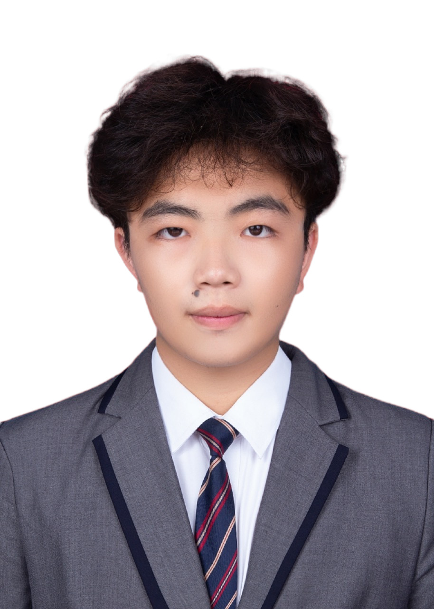

求职方向：外贸业务 / 海外销售 · 工作城市可协商
到岗安排：预计 2026 年 12 月底可到岗；预计 2027 年毕业。毕业前的出勤与在校安排面议。
教育背景
福建商学院 · 国际经济与贸易专业 · 预计 2027 年毕业
语言与办公工具
大学英语六级（CET-6）；口语可用于工作沟通（自评）。
Excel：在课程项目中处理外贸相关数据；PowerPoint：用于项目介绍与汇报。
Excel 练习：报价、成本与单证核对 ↗
课程项目
世格平台 · 中国结出口业务全流程模拟
项目周期：约三周；角色：模拟中国出口公司。原始材料：合同 36001、出口预算、装箱单及单证目录。
- 扮演中国出口公司，寻找客户、收发业务邮件，参与报价、谈判和合同签订。
- 参与模拟报关、单证制作与成本核算。中国结合同记录为 1,251,000 件、USD 875,700，D/P 即期、FAS 条件（均为教学模拟）。
- 使用 Excel 处理外贸相关数据，用 PPT 做项目介绍。
查看课程项目 ↗ · 英文沟通练习 ↗ · 报价与核对练习 ↗
志愿经历
青年志愿者协会 · 志愿活动
参加左海马拉松、敬老院及福利院等志愿活动。
补充作品
竹制厨房收纳用品 B2B 销售流程练习：公开产品与企业资料整理、英文产品表和沟通样稿、订单报价情景分析。查看材料 ↗